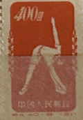
| SOURCE | TITLE| IMAGE MATCH | click to source page |
| Stamps By Themes | France International Sale - n6 Page 192 | 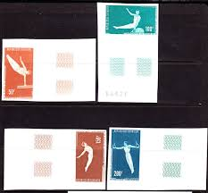 |
| eBay | ROMANIA OLYMPICS AND SPORTS BEAUTIFUL LOT MNH | eBay | 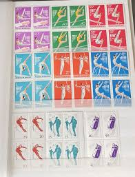 |
| Russian Philately | 1980 Sc 4992 Javelin Scott B100 for sale at Russian Philately | 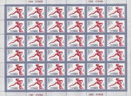 |
| eBay Canada | BULGARIA 1965 GYMNASTICS SPORTS SET FDC UNADDR | eBay | 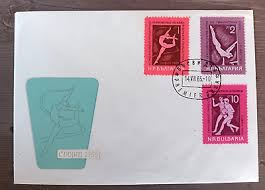 |
| eBay UK | Used Romanian Stamp Blocks for sale | eBay UK | 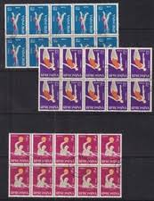 |
| Delcampe | Search in the "Gymnastics" category | Delcampe | 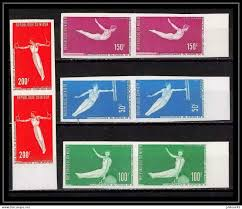 |
| eBay | Russian and Soviet Union Historical Events 2001-2010 Year of Issue Stamps for sale | eBay | 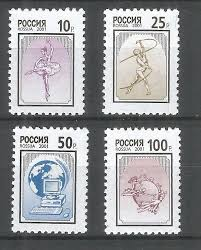 |
| Stamp Community Forum | Russian / Soviet Space Cinderellas - Stamp Community Forum | 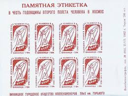 |
| aicolympic.org | THE PRESTIGE OLYMPIC PHILATELY COLLECTION 1894-1939" : THE OLYMPIC MUSEUM IN LAUSANNE - AICO | 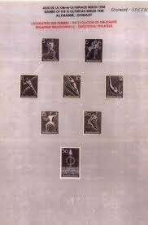 |
| Stamp Auction | Sparks Auctions Sale - 21 Page 11 | 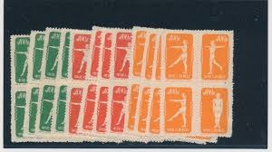 |
| eBay | SPORT: MOSCOW 80 - SET OF 28 STAMPS SC B58 - B90 AND 6 SOUVENIER SHEETS MNHOG | eBay | 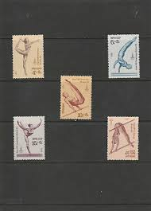 |
| eBay | Used Individual Lithuanian Stamps for sale | eBay | 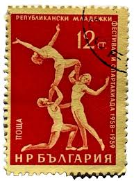 |
| Филателия България | Catalog of Bulgarian Postage Stamps for BC "1624" - "Sport." - six postage stamps. | 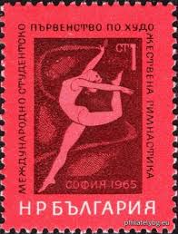 |
| Free stamp catalogue | Stamp 1969, Russia, Soviet Union Ballet 1v, 1969 - Collecting Stamps - Freestampcatalogue.com - The free online stampcatalogue with over 500.000 stamps listed. | 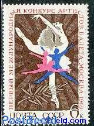 |
| eBay | China (PRC) 148d MNG Block of 10 2015 CV $399.00 | eBay | 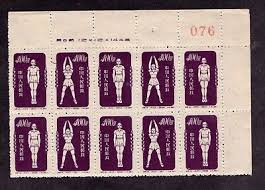 |
| eBay | Russia USSR ☭ 1972 SC 3984-3988 Z 4069-4073 used . rta1225 | eBay | 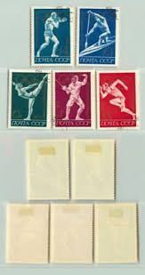 |
| Dreamstime.com | Vintage Stamp Printed in Bulgaria 1965 Shows International Students Championship in Artistic Gymnastics Editorial Photo - Image of paper, history: 161384931 | 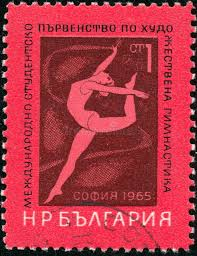 |
| PicClick | SCOTT BROWN INTERNATIONAL 1901-1920 Stamp Album Collection About 2,700 Stamps $473.99 - PicClick | 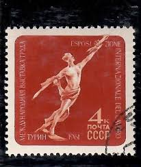 |
| eBay | Competition | eBay | 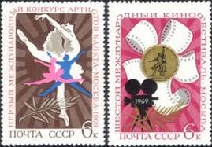 |
| Invaluable.com | Sold at Auction: The Jewish Autonomous Region in Russia - 1939 | 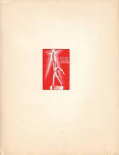 |
| Филателия България | Catalog of Bulgarian Postage Stamps for BC "1994-1995" - "III Republican Spartakiad 1965-1969" - two postage stamps. | 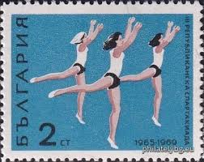 |
| Etsy | 1987 Bulgaria Postage Stamps – World Gymnastics Championships (set of 6) - Etsy | 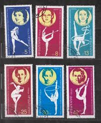 |
| eBay | RUSIA/USSR 1979 SUMMER OLYMPIC GAMES MOSCOW SET OF 10 SHEETS OF 20 STAMPS MNH | eBay | 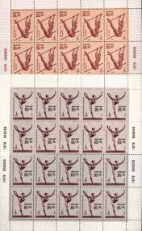 |
| eBay | Russia USSR 1972 SC 3984-3988 MNH sport . rtb5935 | eBay | 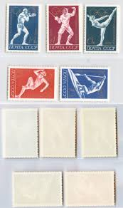 |
| buyhungarianstamps.com | 1079-1086 Poland - 7th European Championships, Imperf (MNH) – Eastern Europe Postage Stamps | Hungaria Stamp Exchange | 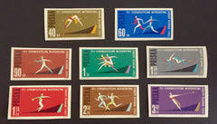 |
| Flickr | Emilio Cipriano | Flickr | 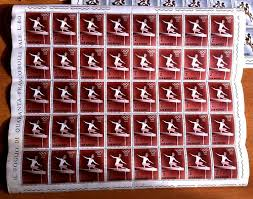 |
| eBay | Vintage 1964 to 1975 6 Russian Stamps Olympics & Gymnastics | eBay | 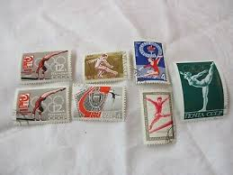 |
| mans-sport.com | Historical Desk Flags Free Territory Of Trieste 1947-1954 Desk Flag 4x6 Inches With Black Plastic Base 4x6 Inch Desk Flag | 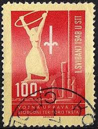 |
| eBay | 1959 Bulgaria SC# 1056-1058 - Acrobats - 3 Different Stamps - Used | eBay | 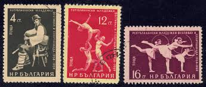 |
| eBay | Soviet Union Olympics Postal Stamps for sale | eBay | 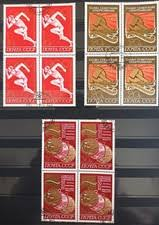 |
| eBay | RUSSIA DEALER-COLLECTOR MNH LOT - DIFFERENT TOPICS - FULL SHEETS, PARTIAL SHEETS | eBay | 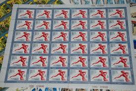 |
| zesstyres.com | 1975 CSCE Stamp Block Art, Artists Mint Never Hinged/MNH Block Romanian Stamps Unmounted Mint Stamps | 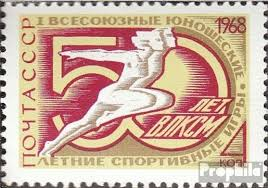 |
| Propagandaworld | Matchbox Label Soviet Russia Sports Hello Competitors | Propagandaworld | 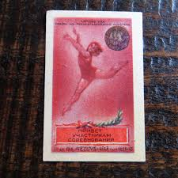 |
| Memorial University of Newfoundland | SOVIET WOUKERS SDENDTHEIR LEISURE | 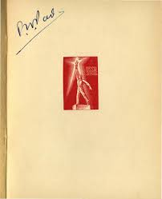 |
| Russian Philately | 1968 SC 3560 All-union Youth Summer Sport Games Scott 3486 for sale at Russian Philately | 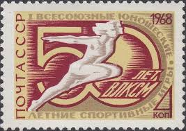 |
| eBay | Russland 885-888 MNH 2001 Symbols | eBay | 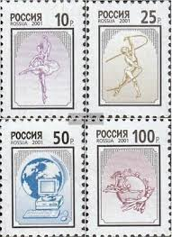 |
| Shutterstock | Ballet Lettering: Over 697 Royalty-Free Licensable Stock Photos | Shutterstock | 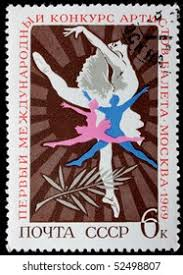 |
| eBay | RUSSIA 1959 Matchbox Label #313/321 д. set, Pedigree matches. | eBay | 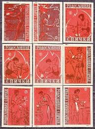 |
| eBay | 1952 PR China Sc #147 Orange Radio Gymnastics Original print MNH NGAI | eBay | 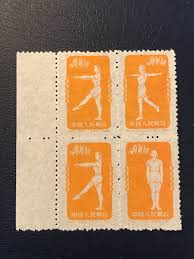 |
| eBay | Vintage USSR postage stamps of the XXII Olympics of the 70-80s | eBay | 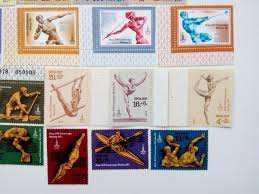 |
| eBay | Russia (USSR) Stamps - 1963 Complete Year - MNH. All Blocks - Full Collection | eBay | 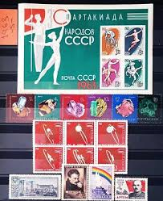 |
| Memorial University of Newfoundland | THE NATIONAL QUESTION SOLVED | 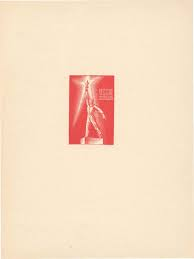 |
| eBay | Matchbox Labels 1956 Set ( 3 ) USSR CCCP Factory " Gomel Combine " Belarus | eBay | 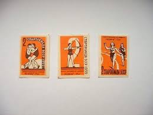 |
| Филателия България | Catalog of Bulgarian Postage Stamps for BC "1113" - "Student Games." - three postage stamps. | 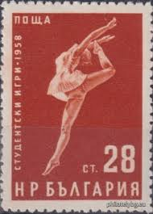 |
| eBay | RUSSIA 1979 OLYMPICS, XF Cpl. MNH** Sheet Set, Gymnastics, Sport, USSR UDSSR | eBay | 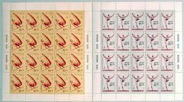 |
| Shutterstock | Vintage Gymnastic: Over 6,909 Royalty-Free Licensable Stock Photos | Shutterstock | 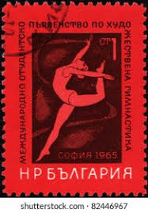 |
| eBay | Russia 2001 SC # 6617-20 MNH Definitives | eBay | 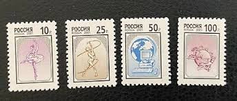 |
| Free stamp catalogue | Stamps from Trieste B-Zone - Freestampcatalogue.com - The free online stampcatalogue with over 500.000 stamps listed. | 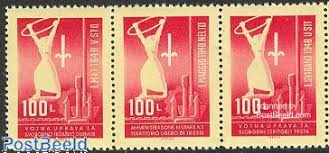 |
| eBay | RUSSIA,USSR:1956 SC#1852 x 4 Used Gymnast. All-Union Spartacist Games, Moscow | eBay | 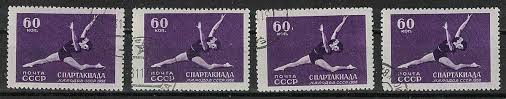 |
| Wikimedia.org | File:Premier Jour Спартак Страсти.jpg - Wikimedia Commons | |
| eBay | Russia USSR 1979 SC B85-B89 Z 4880-4884 MNH. rtb8991 | eBay | |
| eBay | RUSSIA 1959 Matchbox Label #313/321 е. set, Pedigree matches. | |
| Etsy | Free Shipping 4 China Postage Stamps ,gymnastics by Radio,1954 - Etsy | |
| Etsy | Vintage USSR Postage Stamps: 1972 Olympics Collection - Etsy | |
| eBay | Russia USSR, 1963 SC 2763a used, Souvenir Sheet. rta2497 | eBay | |
| 42 Gymnastics ideas | gymnastics, gymnastics quotes, gymnastics pictures | ||
| Artmark | A History of the Twentieth Century - From Monarchy to Communism". Historical Memorabilia Auction #499/2023 | |
| eBay | Sports Gymnastics Bulgaria 1987 (4) Yvert No. 3109 To 3114 Canceled Used | eBay | |
| MyNation Hope Foundation | RUSSIA – 1959, The Blue Gymnast Stamp – Worth US.$13,800 – Valuable, and Rare Postage Stamps | |
| nordfrim.com | Buy Trieste 1948 - Zone B - Sassone 1-3 - Cancelled |
{kind=link}